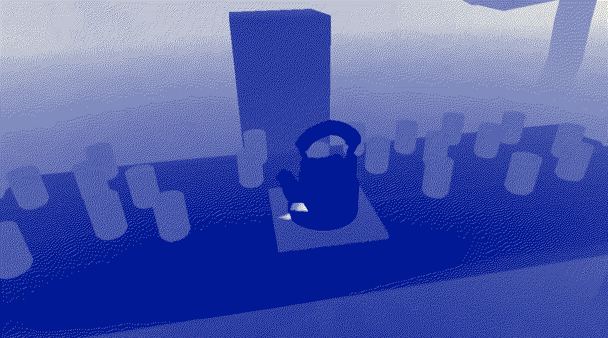
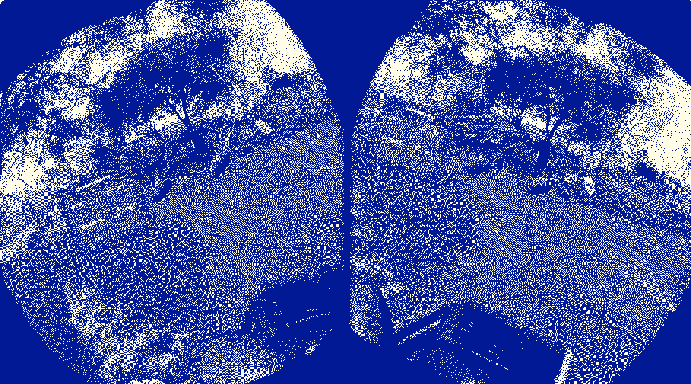
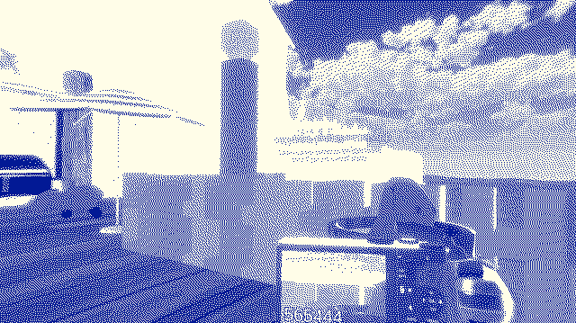
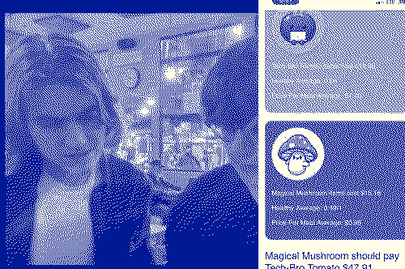
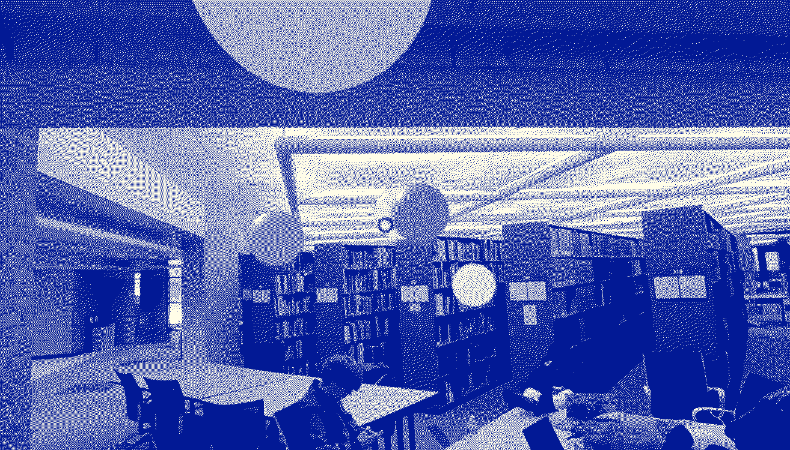
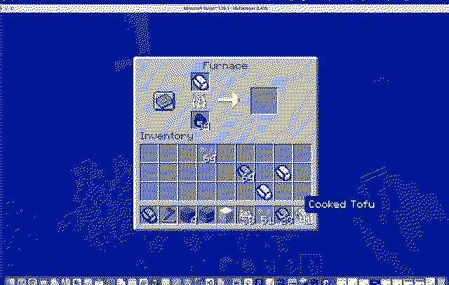
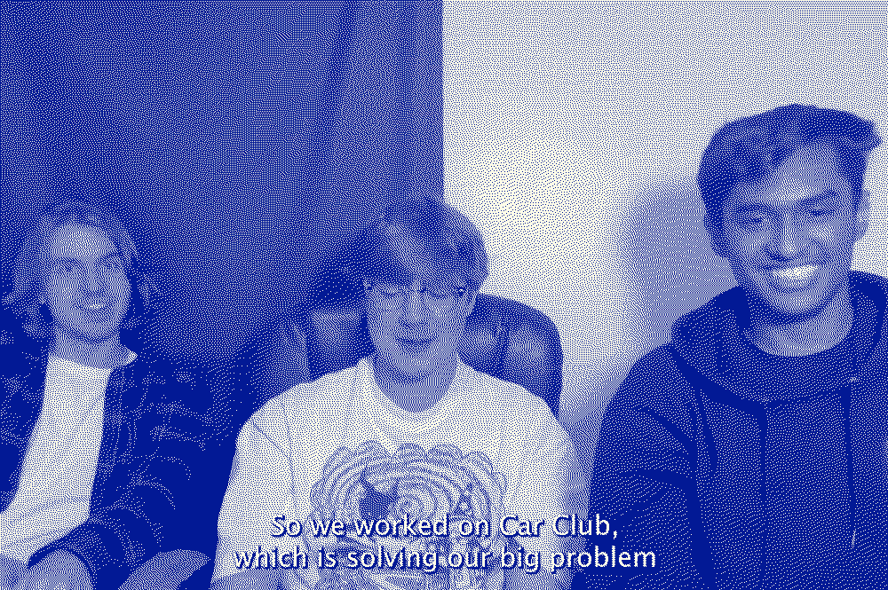
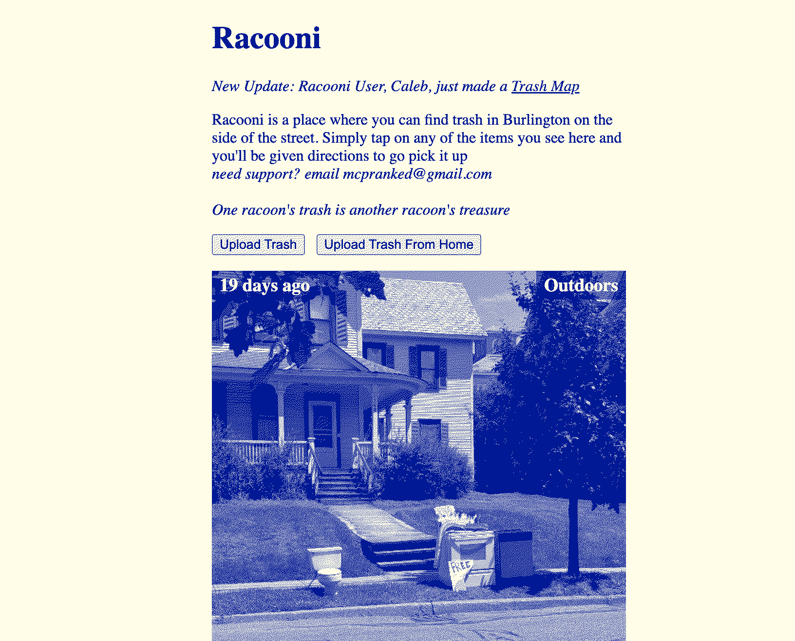

Journeys @
(2023-2024)
Home / Side-Projects-Weekend-Ships
Here are some projects we worked on outside of Hack Club on the weekends :)Life Of Chai
 Life of Chai is a VR game that Dieter and I created about time passing and society bogging individuals down with tasks that people can transcend to break free of societal shackles. Each time you hand the person a cup of chai their life progresses by ten years. You realize you can break free by handing an empty cup, and there your adventure begins...
Try the game
Watch demo
Bikstar
 Bikstar is a game we made at a VR hackathon! It's an AR experience where you put on a VR headset and race your friends to collect carrots.
Watch demo
Capybara Beach
 Capybara Beach is a game that Dieter & I made where you can go on a beach and take photos of Capybaras and those photos will be sent to your phone!
Try the game
Watch demo
Basket Buddy
 Basket buddy is a tool for roommates to split their grocery bill based on items they're sharing & items they're getting for themselves.
Watch demo
Michigan Magic
 Michigan Magic is a project that I built with Sam, Fayd, and Dieter at MHacks. The concept behind the web-based AR experience is that the user can capture memories and then those memories appear as orbs to everyone else in the event and you can look around and relive memories for the event.
Watch demo
Tofu in Minecraft
 Tofu in Minecraft was my first minecraft mod in many years (I think I made one when I was much younger). It was a bunch of fun. I made it at HacKnight hackathon in Boston (organized by Sofia)
Watch demo
Explore Codebase
Car Club
 Car Club is a car sharing app for people who work at HQ & live in the Old North End of Burlington Vermont.
Watch demo
Racooni
 Racooni is a site for finding free trash on the side of the street, taking a photo of the trash, and then sharing it with the Burlington community. We astoturfed on Reddit and got a couple thousand page views and over 100 email signups.
Visit Site
& there are a few other projects that I am probably forgetting to include on this list!